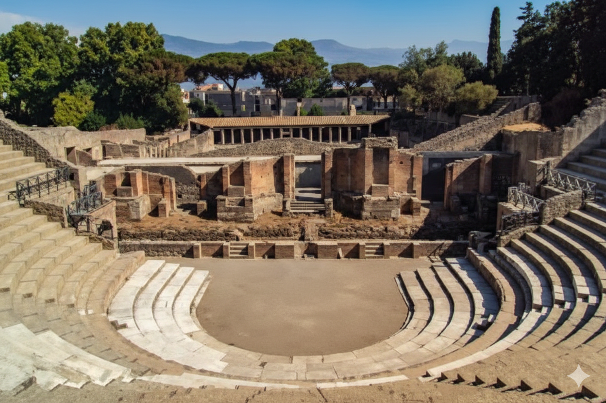

ITA: Scopri la storia millenaria di Pompei e la maestosità del Vesuvio in un unico tour indimenticabile. Partenza da Amalfi (Piazza Flavio Gioia - Terminal Bus). Il prezzo include il trasporto A/R in bus Granturismo, la guida autorizzata e i biglietti d'ingresso sia agli scavi che al cratere. Si prega di presentarsi al punto di incontro 15 minuti prima della partenza.
ENG: Discover the ancient history of Pompeii and the majesty of Mount Vesuvius in one unforgettable tour. Departure from Amalfi (Piazza Flavio Gioia - Bus Terminal). The price includes round-trip Gran Turismo bus transport, an authorized guide, and entrance tickets to both the ruins and the crater. Please arrive at the meeting point 15 minutes before departure.
🗓️ GIORNI / OPERATING DAYS
ITA: Lunedì, Martedì, Mercoledì, Giovedì e Sabato. (Nota: L'escursione combinata Pompei + Vesuvio si effettua solo il Lunedì e il Mercoledì).
ENG: Monday, Tuesday, Wednesday, Thursday, and Saturday. (Note: The combined Pompeii + Vesuvius tour is available only on Monday and Wednesday).
💰 PREZZI / PRICES
|
SOLO POMPEI / ONLY POMPEI |
POMPEI + VESUVIO / BOTH |
| Adulti / Adults |
€ 110 |
€ 140 |
| EU Citizens (18-24) |
€ 90 |
€ 120 |
| Children (11-17) |
€ 85 |
€ 110 |
| Infants (2-10) |
€ 55 |
€ 85 |
ITA: Nota Bene: Per le riduzioni è obbligatorio esibire un documento d'identità valido.
ENG: Please Note: A valid ID is mandatory to benefit from reduced rates.
💳 PRENOTAZIONE / BOOKING
ITA: Per la prenotazione, pagando in contanti possiamo prenotare direttamente presso il nostro desk o al bus. Se preferisci pagare con carta, comunicaci il tuo indirizzo email e ti invieremo un link di pagamento sicuro per confermare il tour.
ENG: To book, you can pay in cash directly at our desk or at the bus. If you prefer to pay by card, provide us with your email address and we will send you a secure payment link to confirm the tour.
ℹ️ Chiedi al desk per costi e maggiori info / Ask at the desk for costs and more info.